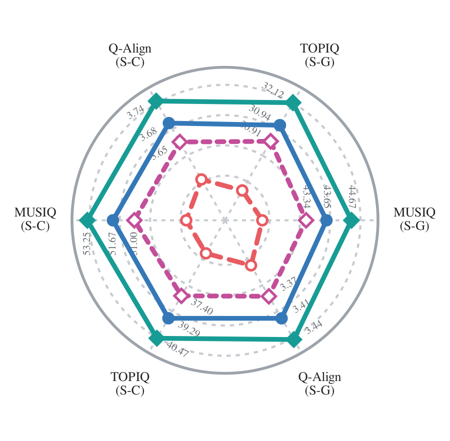
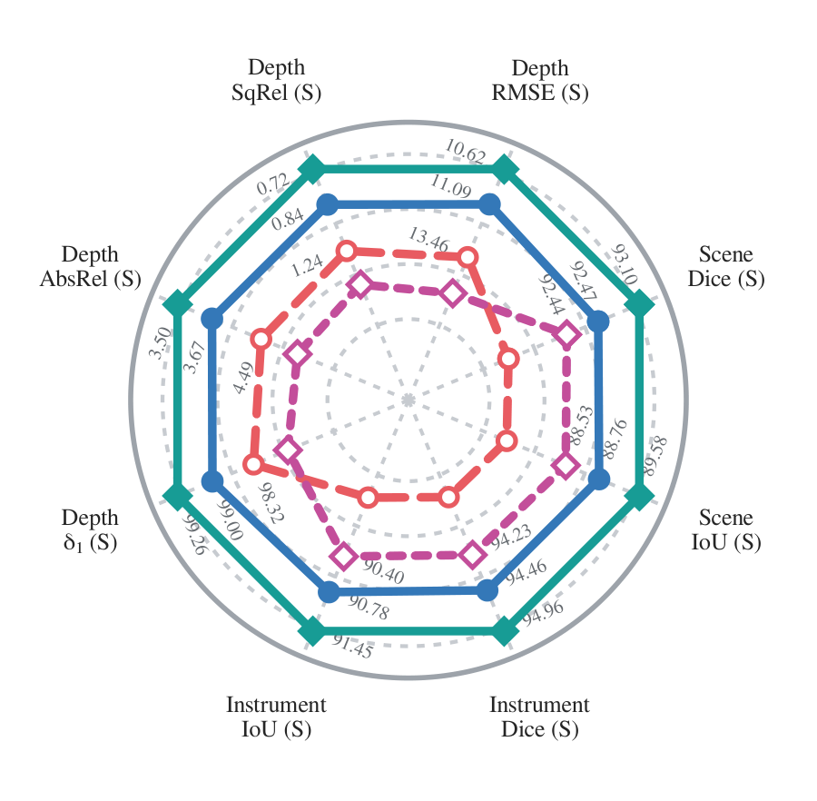
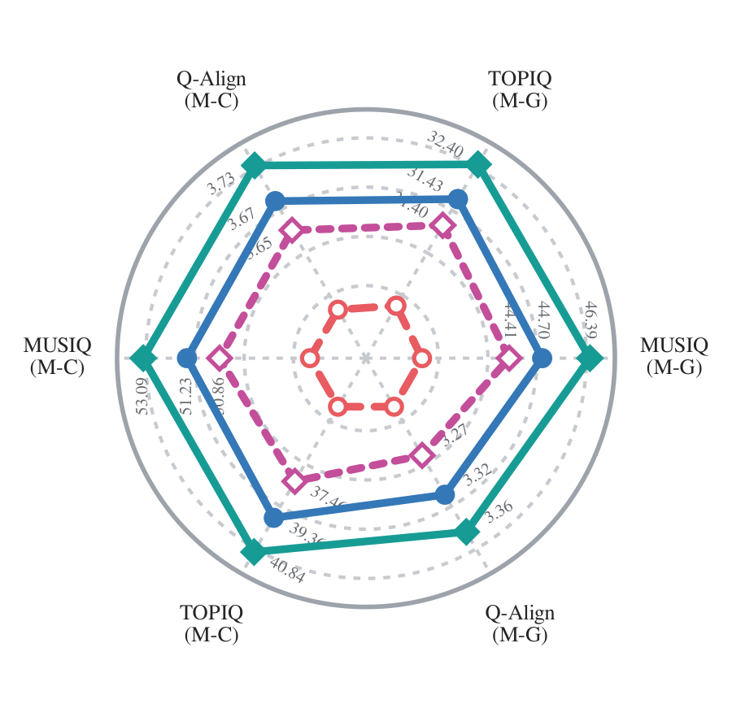
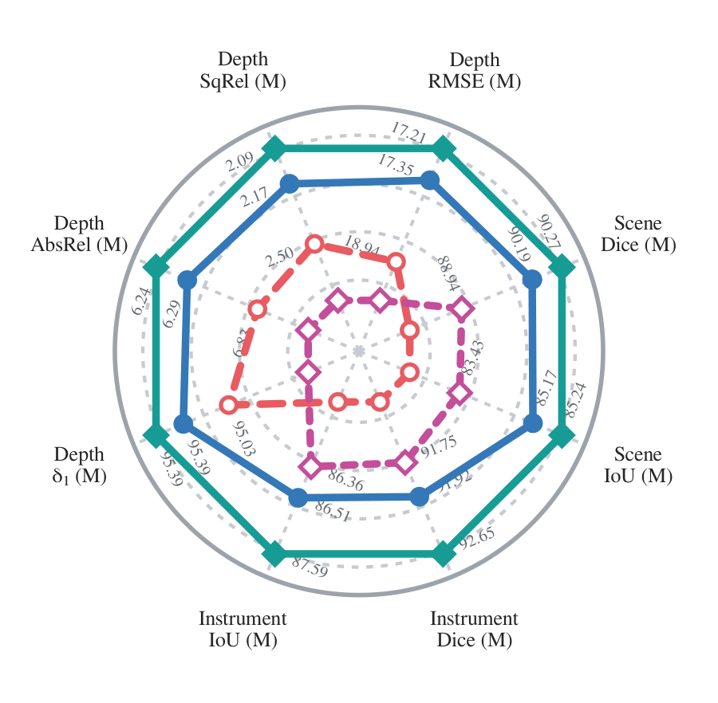
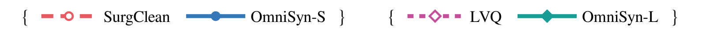
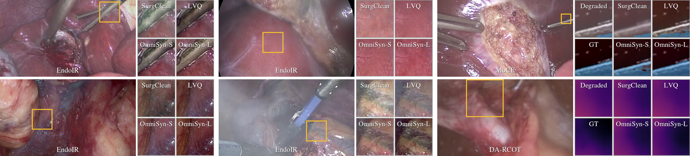
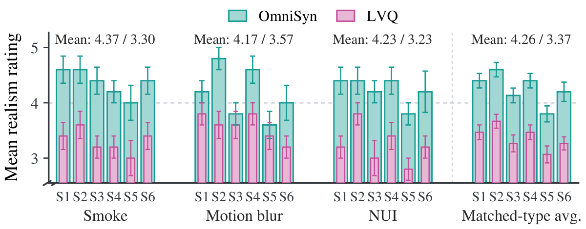
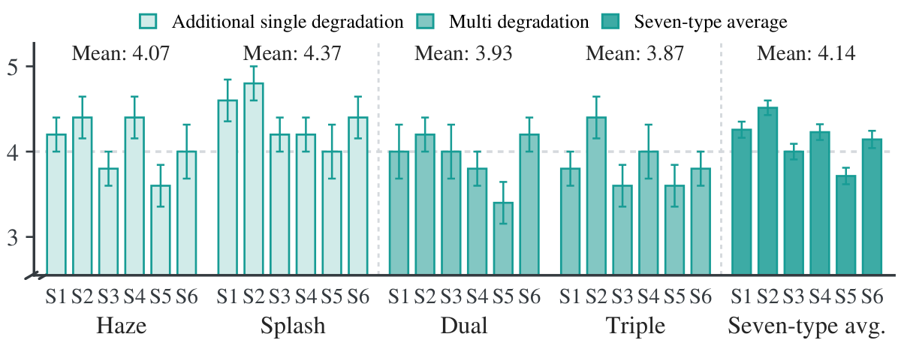

Training Dataset Comparison
To validate the effectiveness of OmniSyn as a training dataset, we compare it with the SurgClean image dataset and LVQ video dataset under two matched-budget settings with aligned scale and degradation types. The SurgClean comparison includes 13 image restoration methods, while the LVQ comparison includes the same image restoration methods and 2 video restoration methods.

Restoration (S)
Downstream (S)
Restoration (M)
Downstream (M)

Surgeon Assessment
As shown in Figure 5, six attending surgeons (S1-S6) with over 10 years of laparoscopic experience independently evaluated synthetic degradation realism in a blinded five-point rating study.

